10J presentation audit Unmodified approved/current images; annotations are audit text, not new design proposals. Shared components omit the app shell. No pixel-to-dp comparison or native acceptance is implied.
home captured_pending_detailed_visual_and_target_review: No standalone exact board; retained behaviour or related-state policy only. Exact visual match unresolved.
Explicit visual inspection: pending detailed visual review
Required final target comparisons remain open.
setup captured_pending_detailed_visual_and_target_review: No standalone exact board; retained behaviour or related-state policy only. Exact visual match unresolved.
Explicit visual inspection: pending detailed visual review
Required final target comparisons remain open.
quiz-unanswered captured_pending_detailed_visual_and_target_review: No standalone exact board; retained behaviour or related-state policy only. Exact visual match unresolved.
Explicit visual inspection: pending detailed visual review
Required final target comparisons remain open.
quiz-confirmed captured_pending_detailed_visual_and_target_review: Exact copy/bindings govern raster approximations; compare full current state.
Explicit visual inspection: pending detailed visual review
Approved: docs/curriculum/app-design/8g/answer-review-v1.png 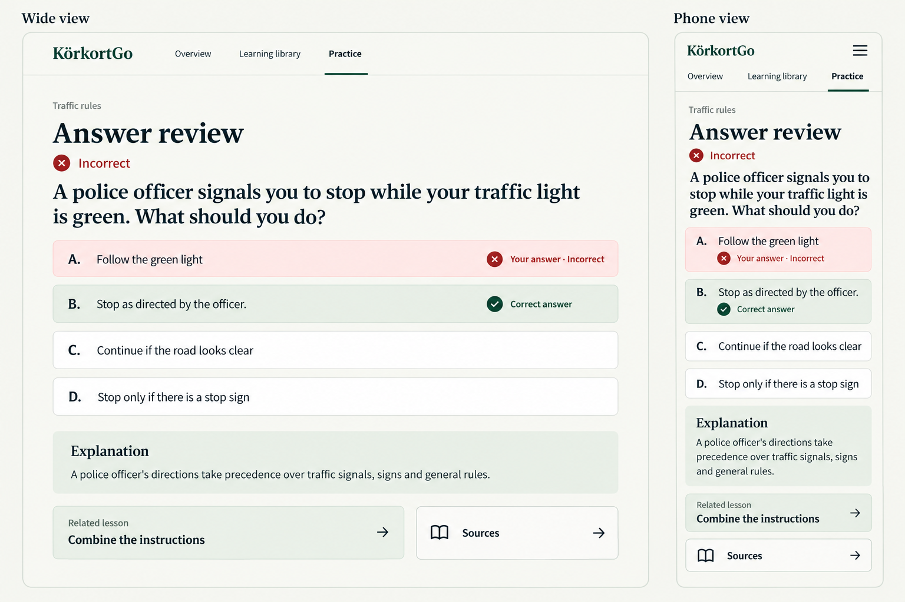
Required final target comparisons remain open.
results captured_pending_detailed_visual_and_target_review: No standalone exact board; retained behaviour or related-state policy only. Exact visual match unresolved.
Explicit visual inspection: pending detailed visual review
Required final target comparisons remain open.
library-overview open_fidelity_finding: Library badge/chevron/document-row grouping and empty-state control hierarchy differ from approved8B/8C.
Explicit visual inspection: captures/library-overview-1280-1.0.png
Approved: docs/curriculum/app-design/8b/library-overview-v1.png 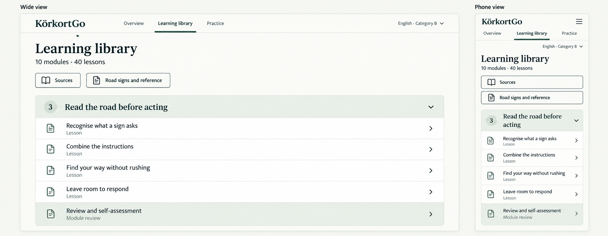
Required final target comparisons remain open.
library-filter open_fidelity_finding: Library badge/chevron/document-row grouping and empty-state control hierarchy differ from approved8B/8C.
Explicit visual inspection: pending detailed visual review
Approved: docs/curriculum/app-design/8c/library-filter-v1.png 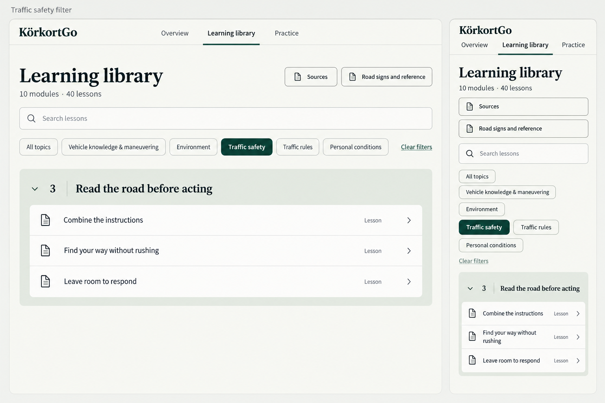
Approved: docs/curriculum/app-design/8c/library-empty-v1.png 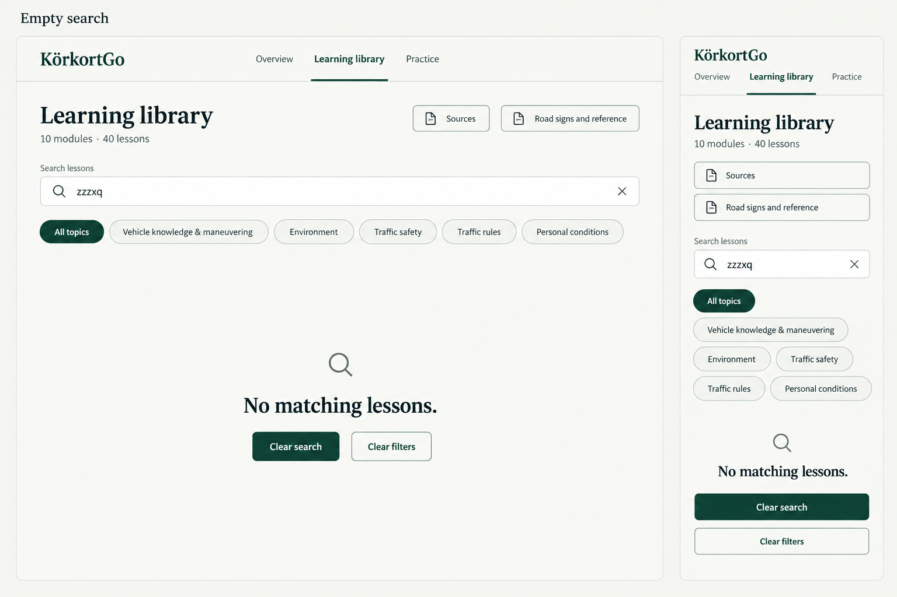
Required final target comparisons remain open.
library-empty open_fidelity_finding: Library badge/chevron/document-row grouping and empty-state control hierarchy differ from approved8B/8C.
Explicit visual inspection: captures/library-empty-390-1.6.png
Approved: docs/curriculum/app-design/8c/library-filter-v1.png Approved: docs/curriculum/app-design/8c/library-empty-v1.png Required final target comparisons remain open.
reader-opening open_fidelity_finding: Goal/Requirements/check/answer hierarchy reduced to inline body labels and generic text button; approved panel/heading treatment absent.
Explicit visual inspection: captures/reader-opening-390-1.6.png
Approved: docs/curriculum/app-design/8d/lesson-opening-v1.png 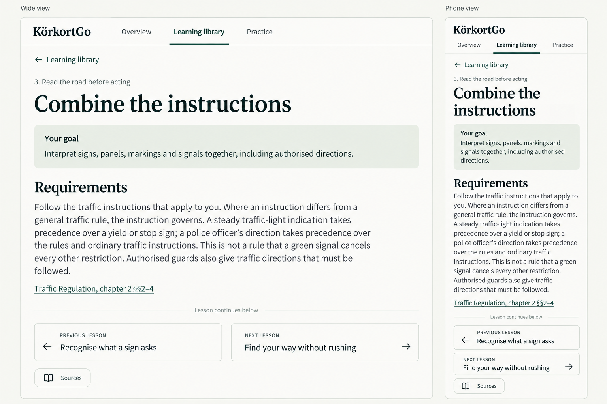
Required final target comparisons remain open.
reader-moved captured_pending_detailed_visual_and_target_review: Exact copy/bindings govern raster approximations; compare full current state.
Explicit visual inspection: pending detailed visual review
Approved: docs/curriculum/app-design/8k/legacy-chooser-v2.png Approved: docs/curriculum/app-design/8k/moved-passage-v1.png 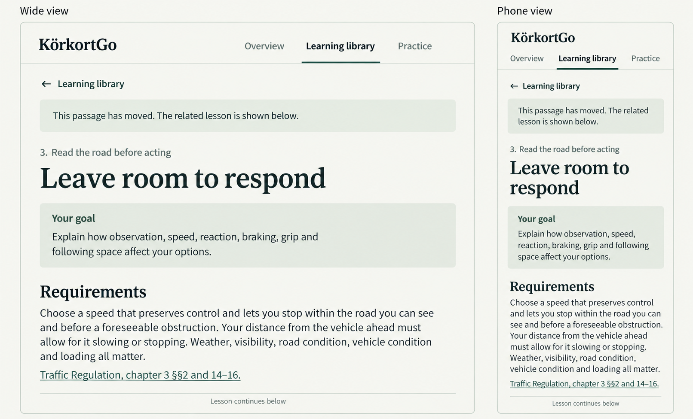
Required final target comparisons remain open.
knowledge-hidden open_fidelity_finding: Goal/Requirements/check/answer hierarchy reduced to inline body labels and generic text button; approved panel/heading treatment absent.
Explicit visual inspection: pending detailed visual review
Approved: docs/curriculum/app-design/8e/knowledge-check-v2.png 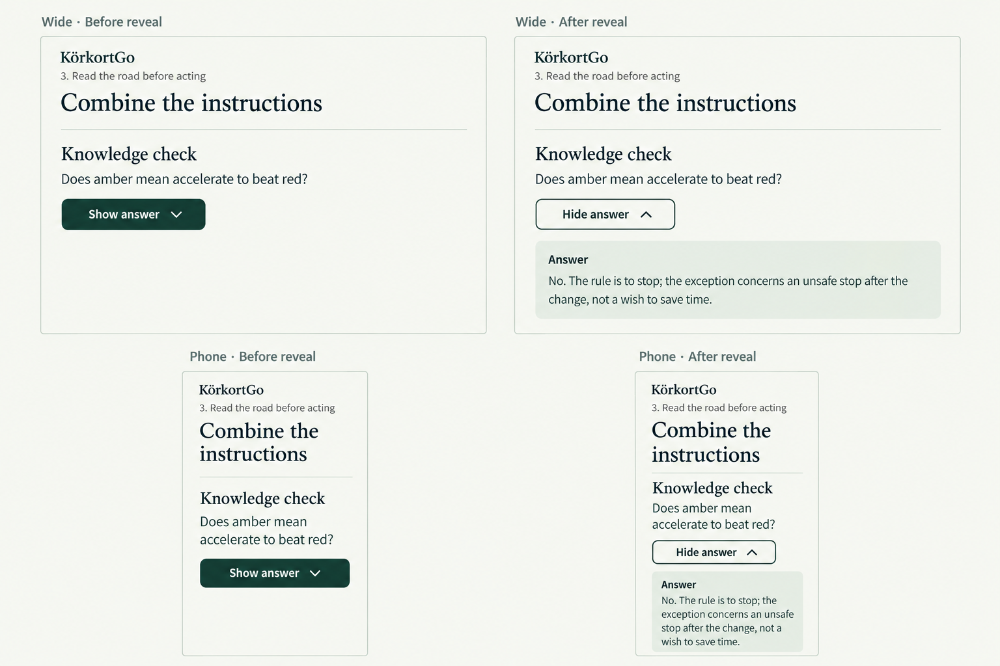
captures/knowledge-hidden-390-1.0.png 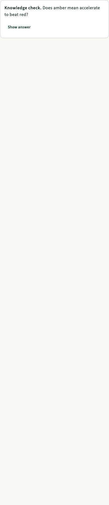
captures/knowledge-hidden-390-1.6.png 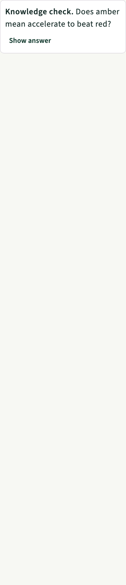
captures/knowledge-hidden-1280-1.0.png captures/knowledge-hidden-1280-1.6.png Required final target comparisons remain open.
knowledge-revealed open_fidelity_finding: Goal/Requirements/check/answer hierarchy reduced to inline body labels and generic text button; approved panel/heading treatment absent.
Explicit visual inspection: captures/knowledge-revealed-390-1.6.png
Approved: docs/curriculum/app-design/8e/knowledge-check-v2.png
captures/knowledge-revealed-390-1.0.png 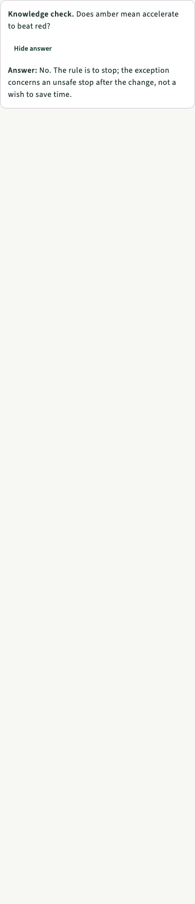
captures/knowledge-revealed-390-1.6.png 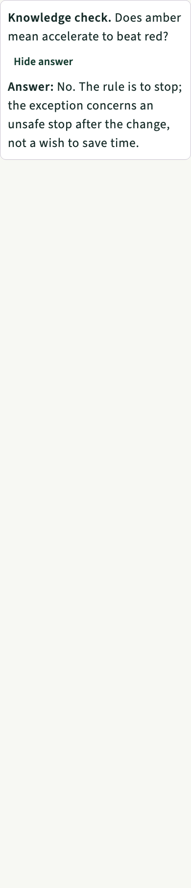
captures/knowledge-revealed-1280-1.0.png captures/knowledge-revealed-1280-1.6.png Required final target comparisons remain open.
reader-long open_fidelity_finding: Goal/Requirements/check/answer hierarchy reduced to inline body labels and generic text button; approved panel/heading treatment absent.
Explicit visual inspection: captures/reader-long-390-1.6.png
Approved: docs/curriculum/app-design/8f/long-content-v1.png 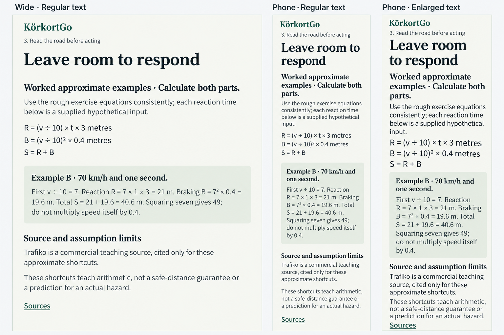
Required final target comparisons remain open.
review-standard open_fidelity_finding: Distinct Explanation and related/source grouping absent; retain all required option feedback.
Explicit visual inspection: captures/review-standard-390-1.6.png
Approved: docs/curriculum/app-design/8g/answer-review-v1.png Required final target comparisons remain open.
review-calculation open_fidelity_finding: Distinct Explanation and related/source grouping absent; retain all required option feedback.
Explicit visual inspection: pending detailed visual review
Approved: docs/curriculum/app-design/8h/calculation-review-v1.png 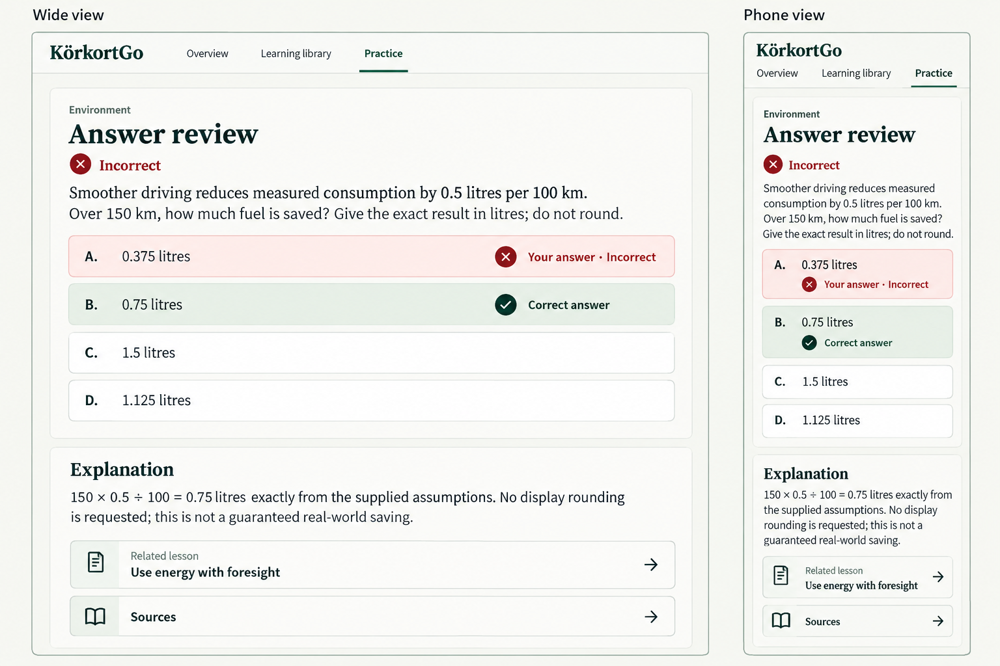
Required final target comparisons remain open.
review-filter-empty pending_fresh_capture: Exact copy/bindings govern raster approximations; compare full current state.
Explicit visual inspection: pending detailed visual review
Approved: docs/curriculum/app-design/8g/answer-review-v1.png
Required final target comparisons remain open.
source-destination pending_fresh_capture: No standalone exact board; retained behaviour or related-state policy only. Exact visual match unresolved.
Explicit visual inspection: pending detailed visual review
Approved: docs/curriculum/app-design/8i/source-directory-v1.png 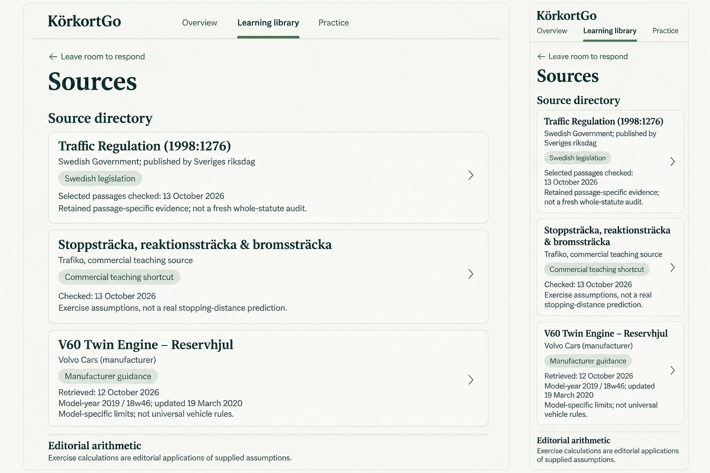
Approved: docs/curriculum/app-design/8i/source-detail-v1.png 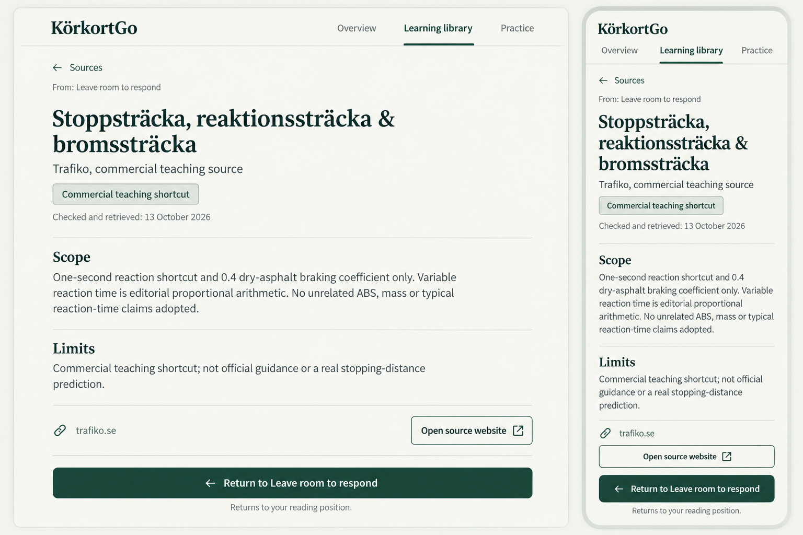
Required final target comparisons remain open.
missing-source pending_fresh_capture: No standalone exact board; retained behaviour or related-state policy only. Exact visual match unresolved.
Explicit visual inspection: pending detailed visual review
Approved: docs/curriculum/app-design/8l/signal-unavailable-v1.png 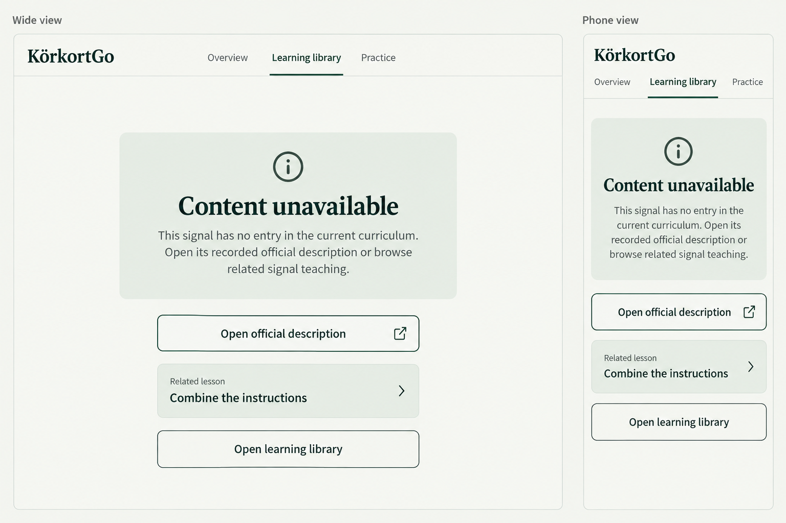
Approved: docs/curriculum/app-design/8l/content-unavailable-v1.png 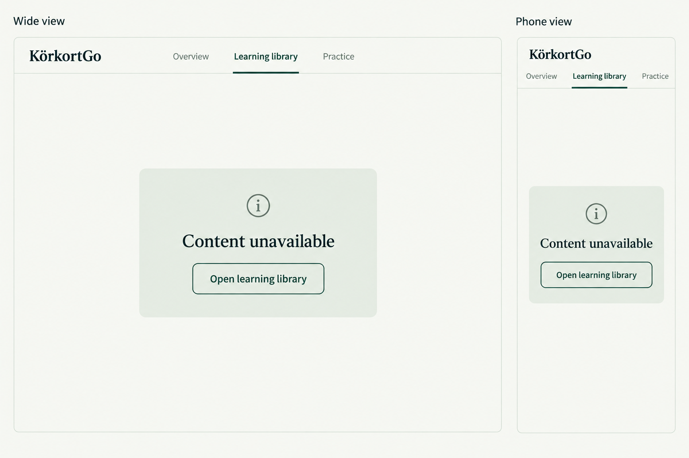
Required final target comparisons remain open.
setup-invalid-count pending_fresh_capture: No standalone exact board; retained behaviour or related-state policy only. Exact visual match unresolved.
Explicit visual inspection: pending detailed visual review
Required final target comparisons remain open.
source-directory open_fidelity_finding: Source detail Scope/Limits/host/return hierarchy absent; exact record text is independently checked in10J3.
Explicit visual inspection: pending detailed visual review
Approved: docs/curriculum/app-design/8i/source-directory-v1.png Approved: docs/curriculum/app-design/8i/source-detail-v1.png
captures/source-directory-390-1.0.png captures/source-directory-390-1.6.png captures/source-directory-1280-1.0.png captures/source-directory-1280-1.6.png Required final target comparisons remain open.
source-detail open_fidelity_finding: Source detail Scope/Limits/host/return hierarchy absent; exact record text is independently checked in10J3.
Explicit visual inspection: captures/source-detail-390-1.6.png
Approved: docs/curriculum/app-design/8i/source-directory-v1.png Approved: docs/curriculum/app-design/8i/source-detail-v1.png
captures/source-detail-390-1.0.png captures/source-detail-390-1.6.png captures/source-detail-1280-1.0.png captures/source-detail-1280-1.6.png Required final target comparisons remain open.
source-failure open_fidelity_finding: Source detail Scope/Limits/host/return hierarchy absent; exact record text is independently checked in10J3.
Explicit visual inspection: pending detailed visual review
Approved: docs/curriculum/app-design/8i/source-directory-v1.png Approved: docs/curriculum/app-design/8i/source-detail-v1.png
captures/source-failure-390-1.0.png captures/source-failure-390-1.6.png captures/source-failure-1280-1.0.png captures/source-failure-1280-1.6.png Required final target comparisons remain open.
reference-catalogue captured_pending_detailed_visual_and_target_review: No standalone exact board; retained behaviour or related-state policy only. Exact visual match unresolved.
Explicit visual inspection: pending detailed visual review
Approved: docs/curriculum/app-design/8j/sign-reference-v1.png
captures/reference-catalogue-390-1.0.png captures/reference-catalogue-390-1.6.png captures/reference-catalogue-1280-1.0.png captures/reference-catalogue-1280-1.6.png Required final target comparisons remain open.
reference-group captured_pending_detailed_visual_and_target_review: No standalone exact board; retained behaviour or related-state policy only. Exact visual match unresolved.
Explicit visual inspection: pending detailed visual review
Approved: docs/curriculum/app-design/8j/sign-reference-v1.png
captures/reference-group-390-1.0.png captures/reference-group-390-1.6.png captures/reference-group-1280-1.0.png captures/reference-group-1280-1.6.png Required final target comparisons remain open.
reference-detail open_fidelity_finding: SignReferenceDetail overrides approved font with FontFamily.Serif; use bundled SourceSerif4 requirement.
Explicit visual inspection: captures/reference-detail-1280-1.0.png
Approved: docs/curriculum/app-design/8j/sign-reference-v1.png
captures/reference-detail-390-1.0.png captures/reference-detail-390-1.6.png captures/reference-detail-1280-1.0.png captures/reference-detail-1280-1.6.png Required final target comparisons remain open.
reference-credits open_fidelity_finding: SignReferenceDetail overrides approved font with FontFamily.Serif; use bundled SourceSerif4 requirement.
Explicit visual inspection: pending detailed visual review
Approved: docs/curriculum/app-design/8j/sign-reference-v1.png
captures/reference-credits-390-1.0.png captures/reference-credits-390-1.6.png captures/reference-credits-1280-1.0.png captures/reference-credits-1280-1.6.png Required final target comparisons remain open.
viewer captured_pending_detailed_visual_and_target_review: Exact copy/bindings govern raster approximations; compare full current state.
Explicit visual inspection: pending detailed visual review
Approved: docs/curriculum/app-design/8j/sign-reference-v1.png
captures/viewer-390-1.0.png captures/viewer-390-1.6.png captures/viewer-1280-1.0.png captures/viewer-1280-1.6.png Required final target comparisons remain open.
legacy-chooser open_fidelity_finding: Informational group/action framing differs from8K/8L; no new route behavior is proposed.
Explicit visual inspection: captures/legacy-chooser-390-1.6.png
Approved: docs/curriculum/app-design/8k/legacy-chooser-v2.png Approved: docs/curriculum/app-design/8k/moved-passage-v1.png
captures/legacy-chooser-390-1.0.png captures/legacy-chooser-390-1.6.png captures/legacy-chooser-1280-1.0.png captures/legacy-chooser-1280-1.6.png Required final target comparisons remain open.
generic-unavailable open_fidelity_finding: Informational group/action framing differs from8K/8L; no new route behavior is proposed.
Explicit visual inspection: pending detailed visual review
Approved: docs/curriculum/app-design/8l/signal-unavailable-v1.png Approved: docs/curriculum/app-design/8l/content-unavailable-v1.png
captures/generic-unavailable-390-1.0.png captures/generic-unavailable-390-1.6.png captures/generic-unavailable-1280-1.0.png captures/generic-unavailable-1280-1.6.png Required final target comparisons remain open.
signal-unavailable open_fidelity_finding: Informational group/action framing differs from8K/8L; no new route behavior is proposed.
Explicit visual inspection: pending detailed visual review
Approved: docs/curriculum/app-design/8l/signal-unavailable-v1.png Approved: docs/curriculum/app-design/8l/content-unavailable-v1.png
captures/signal-unavailable-390-1.0.png captures/signal-unavailable-390-1.6.png captures/signal-unavailable-1280-1.0.png captures/signal-unavailable-1280-1.6.png Required final target comparisons remain open.
signal-failure open_fidelity_finding: Informational group/action framing differs from8K/8L; no new route behavior is proposed.
Explicit visual inspection: captures/signal-failure-390-1.6.png
Approved: docs/curriculum/app-design/8l/signal-unavailable-v1.png Approved: docs/curriculum/app-design/8l/content-unavailable-v1.png
captures/signal-failure-390-1.0.png captures/signal-failure-390-1.6.png captures/signal-failure-1280-1.0.png captures/signal-failure-1280-1.6.png Required final target comparisons remain open.
missing-results captured_pending_detailed_visual_and_target_review: Exact copy/bindings govern raster approximations; compare full current state.
Explicit visual inspection: pending detailed visual review
Approved: docs/curriculum/app-design/8m/missing-results-v1.png
captures/missing-results-390-1.0.png captures/missing-results-390-1.6.png captures/missing-results-1280-1.0.png captures/missing-results-1280-1.6.png Required final target comparisons remain open.
missing-quiz pending_fresh_capture: No standalone exact board; retained behaviour or related-state policy only. Exact visual match unresolved.
Explicit visual inspection: pending detailed visual review
Approved: docs/curriculum/app-design/8m/missing-results-v1.png
Required final target comparisons remain open.
unfinished-guard captured_pending_detailed_visual_and_target_review: No standalone exact board; retained behaviour or related-state policy only. Exact visual match unresolved.
Explicit visual inspection: pending detailed visual review
Approved: docs/curriculum/app-design/8g/answer-review-v1.png
captures/unfinished-guard.png Required final target comparisons remain open.
source-root-failure pending_fresh_capture: No standalone exact board; retained behaviour or related-state policy only. Exact visual match unresolved.
Explicit visual inspection: pending detailed visual review
Approved: docs/curriculum/app-design/8i/source-directory-v1.png Approved: docs/curriculum/app-design/8i/source-detail-v1.png
Required final target comparisons remain open.
faint-question-stem pending_fresh_capture: Exact copy/bindings govern raster approximations; compare full current state.
Explicit visual inspection: pending detailed visual review
Approved: docs/curriculum/app-design/faint-assets-v1/preview.png
Required final target comparisons remain open.
faint-image-options pending_fresh_capture: Exact copy/bindings govern raster approximations; compare full current state.
Explicit visual inspection: pending detailed visual review
Approved: docs/curriculum/app-design/faint-assets-v1/preview.png
Required final target comparisons remain open.
faint-review-reader pending_fresh_capture: Exact copy/bindings govern raster approximations; compare full current state.
Explicit visual inspection: pending detailed visual review
Approved: docs/curriculum/app-design/faint-assets-v1/preview.png
Required final target comparisons remain open.